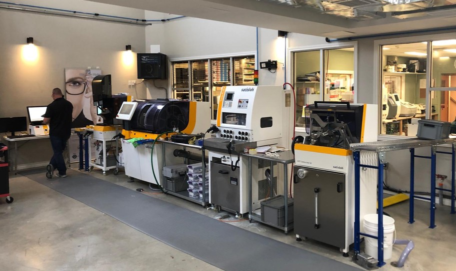

Pal Optical is located in Woodhill Circle Plaza right off New Circle Rd past the Richmond Rd exit. Before we were in our current location we were a staple in the Lexington Mall across the street, and before that our original location was on Main Street. Ever since our beginnings Pal Optical has featured a full service lab so we may be the quickest you will get your eyeglasses anywhere. For most cases we can have your glasses to you the following day and in special cases the same day. We will always try to work with you and our lab to determine the best course of action so everyone ends up satisfied.
So come on in today or anyday except Sunday. We will be here from 9am-6pm to happpily fulfill your eyecare and eyewear needs. Whether you need an eye exam with Dr. Klecker or Dr. Robbins(call first/appointment only) or you need a new pair of glasses Pal Optical will be here to help you see.